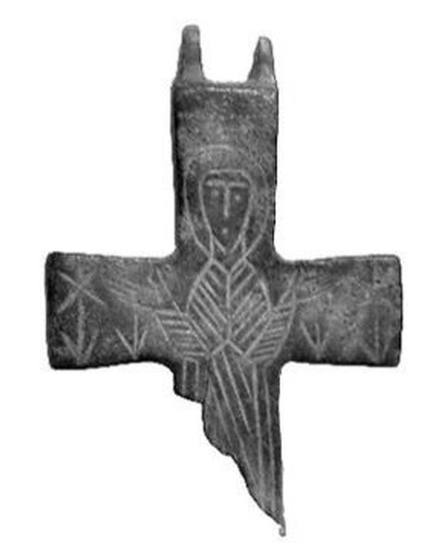

Catalog › CE-0310 · BAL2023-8
Valvă izolată de bronz, cat. 8, Muzeul Kuva-yi Milliye Balıkesir
sec. X–XII (901–1200) · loc necunoscut · Muzeul Kuva-yi Milliye din Balıkesir (Balıkesir Kuva-yi Milliye Müzesi), Turcia, inv. Müze En. No 2001/382
single valve of a reliquary cross, bronz; c. X–XII (901–1200); find spot unknown; kept at Muzeul Kuva-yi Milliye din Balıkesir (Balıkesir Kuva-yi Milliye Müzesi), Turcia.


Identificare
- Categorie
- Valvă izolată
- Material
- Bronz
- Tehnică
- Gravare (incizie)
- Stare
- Fragmentară
- Dimensiuni
- Î 53 × L 36 × Gr 14 mm
Iconografie
- Avers
- Maica Domnului Orantă
- Descriere avers
- Maica Domnului orantă, în stikharion și maphorion, cu maphorionul marcat cu linii oblice; de o parte și de alta a brațelor motive vegetale stilizate. Inscripția care ar fi trebuit să fie deasupra capului (MH ϴV) e ștearsă.
Datare și atribuire
- Datare
- sec. X–XII (901–1200)
- Centru
- Necunoscut
- Tipologie
- Pitarakis 2006, forma tip I; Sıddıki 2023: Maica Domnului Blachernitissa tip II b
Descoperire
- Context
- Colecție (fără context)
- Coordonate
- 39.6484° N, 27.8826° E
- Precizia locului
- Loc de păstrare (loc de descoperire incert)
Păstrare și referințe
- Colecție
- Muzeul Kuva-yi Milliye din Balıkesir (Balıkesir Kuva-yi Milliye Müzesi), Turcia
- Nr. inventar
- Müze En. No 2001/382
- Bibliografie
- F. İ. Sıddıki, Balıkesir Kuva-yi Milliye Müzesi Koleksiyonundaki Bizans Dönemi Bronz Röliker Haçlar, „Art-Sanat”, 20, 2023, p. 561–588 [Sıddıki 2023], p. 579, cat. nr. 8, reprodusă la G. 15–16 (p. 579). DOI: 10.26650/artsanat.2023.20.1290116. Acces liber (CC BY-NC 4.0).
- Figura
- G. 15 (fotografie), G. 16 (desen)
- Planșe
- Sıddıki 2023, p. 579
- Analogii
- Istanbul, Muzeul de Arheologie 2462 și Muzeul Sadberk Hanım 11554-ARK388 (Bilgili 2007, p. 271; sec. X–XII); Atena, Benaki 35564 (Pitarakis 2006, p. 259, cat. 226); Köln, Schnütgen H876 (Pitarakis 2006, p. 265, cat. 249); Salonic, Muzeul Culturii Bizantine BA64/12 (Pitarakis 2006, p. 270, cat. 270)
- Observații
- Datare după Sıddıki: sec. X–XII. Intrată în muzeu prin achiziție, 22.01.1997; locul descoperirii nu se cunoaște (piesele au fost cumpărate din Balıkesir și împrejurimi). Dimensiuni date în sursă (cm): înălțime 5.3, lățime 3.6, grosime 1.4. Un singur capac păstrat; celălalt lipsește, iar balamalele de legătură lipsesc. Brațul de jos lipsește în mare parte; din balamaua de sus s-a păstrat o parte. Autorul spune că linia figurii reflectă Perioada Bizantină Mijlocie. Locul descoperirii nu e cunoscut cu precizie; punctul de pe hartă marchează locul de păstrare (Muzeul Kuva-yi Milliye din Balıkesir), nu locul descoperirii. Coordonate: nu sunt date în sursă.
Citare: Corpus Encolpiorum, CE-0310, Valvă izolată de bronz, cat. 8, Muzeul Kuva-yi Milliye Balıkesir, --root/piese/BAL2023-8/ (accesat 2026-10-17).